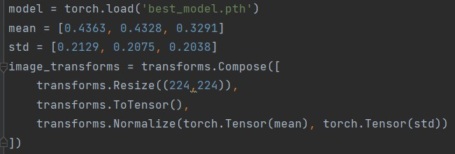
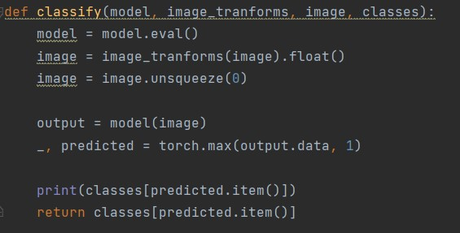

Set the settings for images (Save the model path, set the median and std, and set the image transforms.)

Define classify function:

We need to write a web application to make it easier for a user. First, import the streamlit framework, add streamlit.file_uploader(), and when the
image is uploaded, the classify function should be called.